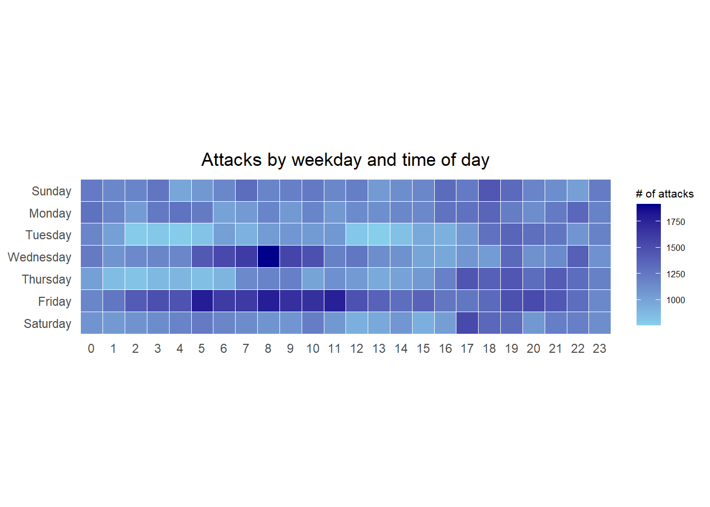

Show code
pacman::p_load(scales, viridis, lubridate, ggthemes, gridExtra, readxl,
knitr, data.table, CGPfunctions, ggHoriPlot, tidyverse)Visualising & Analysing Time-oriented Data
Note: Last modified to include author’s details.
This exercise will over on the following:
plotting a calender heatmap by using ggplot2 functions,
plotting a cycle plot by using ggplot2 function,
plotting a slopegraph
plotting a horizon chart
For the purpose of this exercise, the following R packages will be used.
pacman::p_load(scales, viridis, lubridate, ggthemes, gridExtra, readxl,
knitr, data.table, CGPfunctions, ggHoriPlot, tidyverse)This exercise used the eventlog.csv dataset.
attacks <- read_csv("data/eventlog.csv")kable() can be used to review the structure of the imported data frame.
kable(head(attacks))| timestamp | source_country | tz |
|---|---|---|
| 2015-03-12 15:59:16 | CN | Asia/Shanghai |
| 2015-03-12 16:00:48 | FR | Europe/Paris |
| 2015-03-12 16:02:26 | CN | Asia/Shanghai |
| 2015-03-12 16:02:38 | US | America/Chicago |
| 2015-03-12 16:03:22 | CN | Asia/Shanghai |
| 2015-03-12 16:03:45 | CN | Asia/Shanghai |
There are three columns, namely timestamp, source_country and tz.
timestamp field stores date-time values in POSIXct format.
source_country field stores the source of the attack. It is in ISO 3166-1 alpha-2 country code.
tz field stores time zone of the source IP address.
Derive two new fields namely wkday and hour before plotting the calendar heatmap, by writing a function() to perform the task.
make_hr_wkday <- function(ts, sc, tz) {
real_times <- ymd_hms(ts,
tz = tz[1],
quiet = TRUE)
dt <- data.table(source_country = sc,
wkday = weekdays(real_times),
hour = hour(real_times))
return(dt)
}Beside extracting the necessary data into attacks data frame, mutate() of dplyr package is used to convert wkday and hour fields into factor so they’ll be ordered when plotting.
wkday_levels <- c('Saturday', 'Friday',
'Thursday', 'Wednesday',
'Tuesday', 'Monday',
'Sunday')
attacks <- attacks %>%
group_by(tz) %>%
do(make_hr_wkday(.$timestamp,
.$source_country,
.$tz)) %>%
ungroup() %>%
mutate(wkday = factor(
wkday, levels = wkday_levels),
hour = factor(
hour, levels = 0:23))kable(head(attacks))| tz | source_country | wkday | hour |
|---|---|---|---|
| Africa/Cairo | BG | Saturday | 20 |
| Africa/Cairo | TW | Sunday | 6 |
| Africa/Cairo | TW | Sunday | 8 |
| Africa/Cairo | CN | Sunday | 11 |
| Africa/Cairo | US | Sunday | 15 |
| Africa/Cairo | CA | Monday | 11 |
grouped <- attacks %>%
count(wkday, hour) %>%
ungroup() %>%
na.omit()
ggplot(grouped,
aes(hour,
wkday,
fill = n)) +
geom_tile(color = "white",
size = 0.1) +
theme_tufte(base_family = "Helvetica") +
coord_equal() +
scale_fill_gradient(name = "# of attacks",
low = "sky blue",
high = "dark blue") +
labs(x = NULL,
y = NULL,
title = "Attacks by weekday and time of day") +
theme(axis.ticks = element_blank(),
plot.title = element_text(hjust = 0.5),
legend.title = element_text(size = 8),
legend.text = element_text(size = 6) )
In order to identify the top four countries with the highest number of attacks, the following have to be done:
count the number of attacks by country,
calculate the percent of attackes by country, and
save the results in a tibble data frame.
attacks_by_country <- count(
attacks, source_country) %>%
mutate(percent = percent(n/sum(n))) %>%
arrange(desc(n))Extract the attack records of the top four countries from attacks data frame and save the data in a new tibble data frame (i.e. top4_attacks).
# extracts top 4 source countries & save as top4
top4 <- attacks_by_country$source_country[1:4]
top4_attacks <- attacks %>%
# filter attack dataset to include only rows from top4
filter(source_country %in% top4) %>%
count(source_country, wkday, hour) %>%
# remove previous grouping from previous code action
ungroup() %>%
# convert variable 'source_country' to factor from top4
mutate(source_country = factor(
source_country, levels = top4)) %>%
# remove rows with missing values
na.omit()Use ggplot2 package to plot multiple calendar heatmaps.
ggplot(top4_attacks,
aes(hour,
wkday,
fill = n)) +
geom_tile(color = "white",
size = 0.1) +
theme_tufte(base_family = "Helvetica") +
coord_equal() +
scale_fill_gradient(name = "# of attacks",
low = "sky blue",
high = "dark blue") +
facet_wrap(~source_country, ncol = 2) +
labs(x = NULL, y = NULL,
title = "Attacks on top 4 countries by weekday and time of day") +
theme(axis.ticks = element_blank(),
axis.text.x = element_text(size = 7),
plot.title = element_text(hjust = 0.5),
legend.title = element_text(size = 8),
legend.text = element_text(size = 6) )
The code chunk below imports arrivals_by_air.xlsx by using read_excel() of readxl package and save it as a tibble data frame called air.
air <- read_excel("data/arrivals_by_air.xlsx")Two new fields called month and year are derived from Month-Year field.
air$month <- factor(month(air$`Month-Year`),
levels=1:12,
labels=month.abb,
ordered=TRUE)
air$year <- year(ymd(air$`Month-Year`))For effective data visualisation design, use as.factor() to convert the value type of Year field from numeric to factor.
Vietnam <- air %>%
select(`Vietnam`,
month,
year) %>%
filter(year >= 2010) %>%
mutate(year = as.factor(year))The code chunk below uses group_by() and summarise() of dplyr to compute year average arrivals by month.
hline.data <- Vietnam %>%
group_by(month) %>%
summarise(avgvalue = mean(`Vietnam`))ggplot() +
geom_line(data=Vietnam,
aes(x=year,
y=`Vietnam`,
group=month),
colour="black") +
geom_hline(aes(yintercept=avgvalue),
data=hline.data,
linetype=6,
colour="red",
size=0.5) +
facet_grid(~month) +
theme(axis.text.x = element_text(angle = 90, size = 4),
panel.grid = element_blank()) +
labs(axis.text.x = element_blank(),
title = "Visitor arrivals from Vietnam by air, Jan 2010-Dec 2019") +
xlab("") +
ylab("No. of Visitors")rice <- read_csv("data/rice.csv")For effective data visualisation design, use factor() to convert the value type of Year field from numeric to factor.
rice %>%
mutate(Year = factor(Year)) %>%
filter(Year %in% c(1961, 1980)) %>%
newggslopegraph(Year, Yield, Country,
Title = "Rice Yield of Top 11 Asian Counties",
SubTitle = "1961-1980",
Caption = "Data Source: Rice Yield")